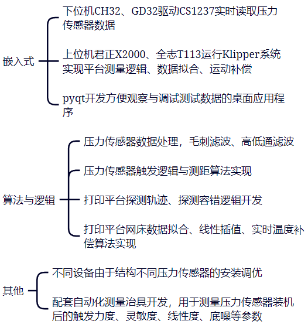

背景：
公司多款设备出现首层打印异常的客诉问题以及一些设备需要用户手动校准急需引入自动调平系统
目标：
基于Klipper FDM3D打印机系统实现全自动调平、提高探测速度与精度、解决首层打印压层、刮热床、局部不粘等问题，实现完美首层打印效果
成果：
1. 设计新型喷头压力传感器，提高传感器采样率，实现探测压力小于150g
2. 优化压力传感器触发逻辑、增加重复探测容错机制，实现0.01mm探测精度
3. 探测平台边缘4点的高度来拟合平台倾斜度，优化探测路径，9*9探测时间缩短50%
4. 实现大尺寸设备网床探测精度0.03mm内及完美首层打印成功率超过95%
5. 预研电感涡流传感器测距，探测精度0.01mm。实现非接触式快速扫描整个网床平面高度数据，并支持首层打印过程实时测量与调节Z轴高度
负责部分：
